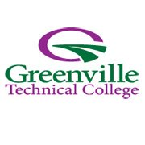

Southern New Hampshire University
Bachelor's Degree in Creative Writing and English with a Concentration in Fiction (Graduated Summa Cum Laude in 2017)

Greenville Technical College
Associates Degree in Computer Science with a Concentration in Programming (Currently In Progress)
Status: In Progress
This is the website you're looking at. It was built from scratch with the help of Google and Bootstrap, a CSS and JavaScript design framework. This website is a work in progress so it will likely never be fully completed. In the future, I plan on focusing on improving the mobile experience of this website as well as work to incorporate more JavaScript to create a more dynamic experience.
Status: Complete (Summer 2019)
This website was designed as a final project for my IST-239 JavaScript Programming Course. The requirements were similar to the final portfolio for my IST-226 class but the teacher emphasized that they expected to see a more robust web site. I am happier with the color palette I chose for this website than the weird blues I worked with on the IST-226 portfolio. This website also features some JavaScript tricks that I learned from this course, including a Feedback Form with form validation and an entry box which returns the length of a user-input string. The projects I completed for this course were a lot of fun and covered a wide range of JavaScript skills.
Status: Complete (Spring 2019)
This website was designed as a final project for my IST-226 Internet Programming Course (HTML/CSS). The final portfolio was intended to showcase the projects we completed throughout the course. The teacher said that they didn't want black text on a white background so I chose a weird blue color scheme. Web aesthetics is one of my weaker points so that is something I want to focus on in the future. When I went into this course, I knew HTML and some basic CSS. This class helped me learn the basic principles of web design.
Status: In Progress
This website is the next project I will be working on. It is going to be an interactive gallery that features pictures and information about the various hikes I have been going on. I want to focus more on JavaScript with this website and try to make it feel interactive.
I was born on a winter morning on February 19th, 1991 in Warren, Michigan. I had a great childhood filled with camping, traveling, and exploring. I started my first job as a dishwasher when I was 15, I moved up to line cook when I was 18, and I joined the military just before I turned 21. I served 7 years active duty in the United States Air Force as a diesel generator mechanic and deployed overseas three times.
While I was active duty, I got my Bachelors Degree in Creative Writing from Southern New Hampshire University. I attended a few different schools before I found SNHU but once I finally started attending classes there, I knew they were a great school. They were incredible throughout my entire degree, working with me as I juggled the military and my education. I switched my degree program a few times (as most college students do) but I settled on Creative Writing because it has always been a passion of mine. When it came time to separate from the military, I was faced with the choice of pursuing a career in writing or starting a new journey. I decided it was time to start down another path.
In January of 2019, I started attending Greenville Technical College in Greenville, South Carolina in pursuit of an Associates Degree in Computer Science. I know most people would not go back for an Associates degree after they already have their Bachelors but I wanted the time to study hard and prepare myself for success in a new career. That brings us to the present day - I am currently in the middle of pursing my degree and setting myself up for a future career in computer programming. This website is going to serve as the portfolio for all of the work that I create while I am attending school as well as any personal projects I decide to pursue. The focus right now is entirely on improving my abilities and becoming the best programmer that I can be.
Looking back, it's fascinating how many technical skills I have acquired over the years. I have experience cooking in a professional kitchen, changing oil on diesel generators, troubleshooting electrical circuits, and writing compelling literature. I have been to Qatar, Dubai, and Germany. I have worked long, hard hours and I have fought through exhaustion to push myself to the edge of my capabilities.
Moving into the future, programming is the path - whether that is through web development, software development, or app development. Right now I want to do it all and I want to build the foundation for a career that I can finally settle into for the long haul.